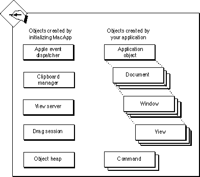

The Structure of a MacApp Application
A running MacApp application is a collection of objects in memory that can respond to events by performing specified actions. Figure 1-1 shows a typical application. Some of the objects that make up the application are instantiated from MacApp classes to provide services to the application. Others are instantiated from classes you define. The objects inhabit the same program space and interact with each other in standard and well-defined ways.Figure 1-1 A MacApp application's objects in memory

MacApp comes with complete source code (described in Appendix C), so you can modify any MacApp behavior either by defining subclasses of MacApp classes or, less commonly, by modifying MacApp code directly. For example, you rarely define subclasses of MacApp's
TDragSessionorTViewServerclasses, you frequently define subclasses of MacApp's many command classes, and you always define subclasses of theTApplicationandTDocumentclasses. (These classes are described in greater detail later in this book.) And if you need to override a method that MacApp does not declare asvirtual, you can modify MacApp's source code to make the necessary change.Each MacApp application has a single instance of an application object, which can be accessed through the global variable
gApplication. The application object performs a number of operations, including running the main event loop, dispatching events to objects, and handling commands to open, create, and save documents. It calls on other MacApp objects for services, including an event dispatcher to dispatch Apple events and a Clipboard manager to retrieve desk scrap data and display it in a Clipboard view.As Figure 1-1 shows, an application may have multiple document objects associated with it. Document objects store data in memory or on disk. A document calls on the view server object to create windows and views; a view uses a print handler object to print its data.
Each document window may have multiple nested views. View objects display data and receive user input. View and window objects work together with MacApp's global drag session object to perform drag-and-drop operations.
Application, document, window, and view objects may create command objects to perform recordable operations that can be done, undone, and redone. Command objects and other objects created by your application live in the object heap managed by MacApp.